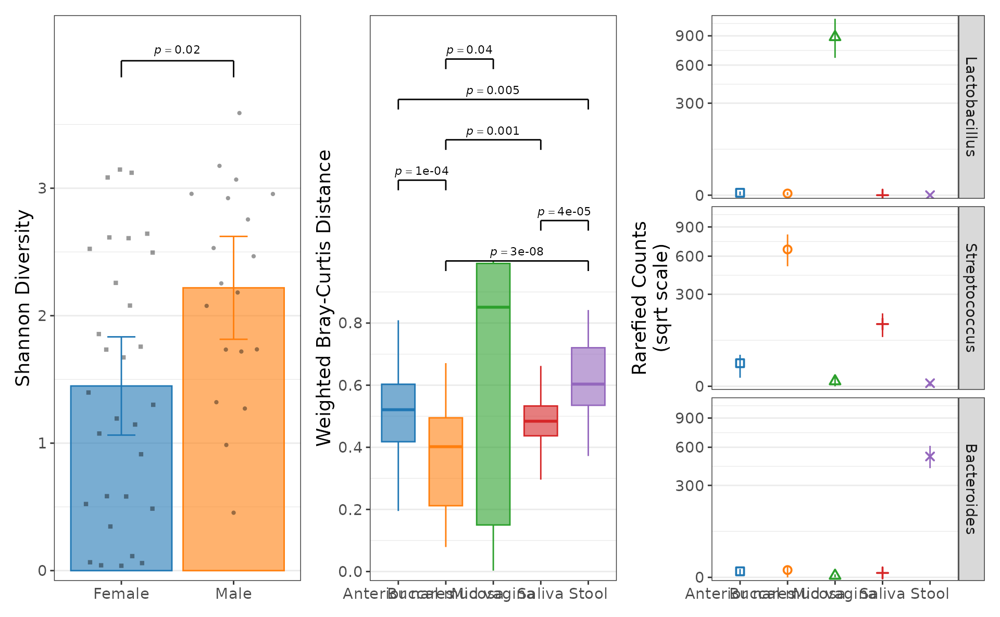
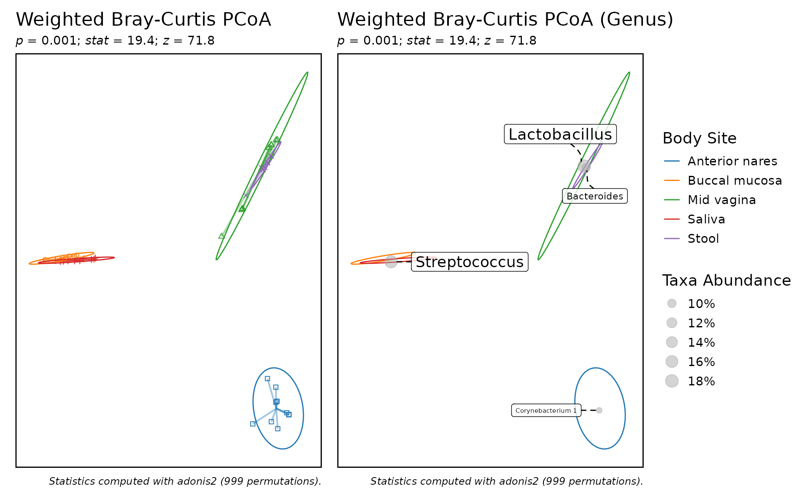

Plotting functions in rbiom fall into five categories:
| Category | Functions |
|---|---|
| Box Plots |
adiv_boxplot() bdiv_boxplot()
taxa_boxplot()
|
| Correlation Plots |
adiv_corrplot() bdiv_corrplot()
taxa_corrplot()
|
| Ordination Plots | bdiv_ord_plot() |
| Heatmaps |
bdiv_heatmap() taxa_heatmap()
plot_heatmap()
|
| Stacked Bar Plots | taxa_stacked() |
Box Plots
Box plots are useful for visualizing a numeric outcome against one or more categorical predictors. The rbiom package provides dedicated functions for three numeric outcomes:
- Alpha Diversity (shannon, simpson, etc) -
adiv_boxplot(). - Beta Diversity (unifrac, bray-curtis, etc) -
bdiv_boxplot(). - Taxa Abundance (phylum, genus, etc) -
taxa_boxplot().
You can then map categorical metadata variables to the x-axis, colors, patterns, shapes, and facets. See Mapping Metadata to Aesthetics for details.
Layers
Despite being refered to as “box plots”, rbiom’s
*_boxplot() functions support a wide range of graphical
elements beyond box-and-whisker.
You can assign one or more of the following options to a box plot’s
layers parameter.

Unambiguous abbreviations are also accepted. For instance,
layers = c("box", "dot") is equivalent to
layers = c("x", "d") and layers = "xd". Note
that the single letter abbreviation for “box” is “x” (“bar” is “b”).
Examples
biom <- rarefy(hmp50, depth = 1000)
adiv <- adiv_boxplot(
biom = biom, layers = "bes", x = "Sex", stat.by = "Sex")
bdiv <- bdiv_boxplot(
biom = biom, layers = "xd", x = "==Body Site", stat.by = "Body Site",
pt.alpha = 0.2, pt.stroke = 0 )
taxa <- taxa_boxplot(
biom = biom, layers = "p", x = "Body Site", p.label = 0, taxa = 3,
facet.ncol = 1, facet.strip.position = "right" )
patchwork::wrap_plots(
lapply(list(adiv, bdiv, taxa), function (p) {
p +
ggplot2::labs(x = NULL, caption = NULL) +
ggplot2::theme(legend.position = "none") }))
Statistics
The categorical groups defined by x,
stat.by, etc are used to calculate non-parametric
statistics with the Mann-Whitney or Kruskal-Wallis algorithms. See Statistics for details.
Correlation Plots
Correlation plots are designed to visualize the relationship between a numeric outcome and a numeric predictor, optionally with additional categorical predictors. The rbiom package provides dedicated functions for three numeric outcomes:
- Alpha Diversity (shannon, simpson, etc) -
adiv_corrplot(). - Beta Diversity (unifrac, bray-curtis, etc) -
bdiv_corrplot(). - Taxa Abundance (phylum, genus, etc) -
taxa_corrplot().
You can then map categorical metadata variables to the x-axis, colors, and facets. See Mapping Metadata to Aesthetics for details.
Layers
You can assign one or more of the following options to a correlation
plot’s layers parameter.

Unambiguous abbreviations are also accepted. For instance,
layers = c("trend", "point") is equivalent to
layers = c("t", "p") and layers = "tp".
Examples
biom <- rarefy(hmp50, depth = 1000)
adiv <- adiv_corrplot(biom, layers = "ts", x = "BMI")
bdiv <- bdiv_corrplot(
biom = biom, layers = "tc", x = "BMI", stat.by = "==Body Site",
limit.by = list("Body Site" = c("Buccal mucosa", "Stool")) )
taxa <- taxa_corrplot(
biom = biom, layers = "tsr", x = "Age", taxa = 3, stat.by = "Body Site",
limit.by = list("Body Site" = c("Mid vagina", "Saliva", "Stool")),
facet.ncol = 1, facet.strip.position = "right" )
patchwork::wrap_plots(
guides = "collect",
lapply(list(adiv, bdiv, taxa), function (p) {
p + ggplot2::labs(caption = NULL) }))
Ordination Plots
Layers
You can assign one or more of the following options to a ordination
plot’s layers parameter.
#> Warning in MASS::cov.trob(data[, vars]): Probable convergence failure
Unambiguous abbreviations are also accepted. For instance,
layers = c("point", "ellipse") is equivalent to
layers = c("p", "e") and layers = "pe".
The layers c("point", "spider", "ellipse", "name") apply
to samples. The layers c("mean", "taxon", "arrow") apply to
the taxa.
Examples
biom <- rarefy(hmp50)
p1 <- bdiv_ord_plot(biom, layers = "pse", stat.by = "Body Site") +
ggplot2::theme(legend.position = "none")
p2 <- bdiv_ord_plot(biom, layers = "emt", stat.by = "Body Site")
patchwork::wrap_plots(p1, p2, guides = "collect")
Heatmaps
Visualizing a large grid of values is a job for heatmaps. The generic
plot_heatmap() function accepts any matrix, while the two
common use cases below operate on a biom object.
- Beta Diversity (unifrac, bray-curtis, etc) -
bdiv_heatmap(). - Taxa Abundance (phylum, genus, etc) -
taxa_heatmap().
Examples
biom <- rarefy(hmp50)
bdiv <- bdiv_heatmap(biom, tracks = c("Age", "Body Site"), asp = 0.4)
taxa <- taxa_heatmap(biom, tracks = c("Age", "Body Site"), asp = 0.4)
patchwork::wrap_plots(bdiv, taxa, ncol = 1, guides = "collect")